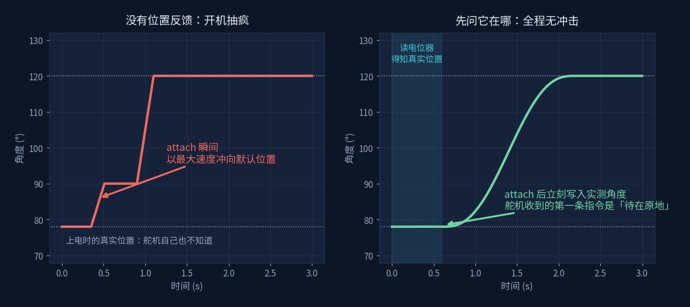
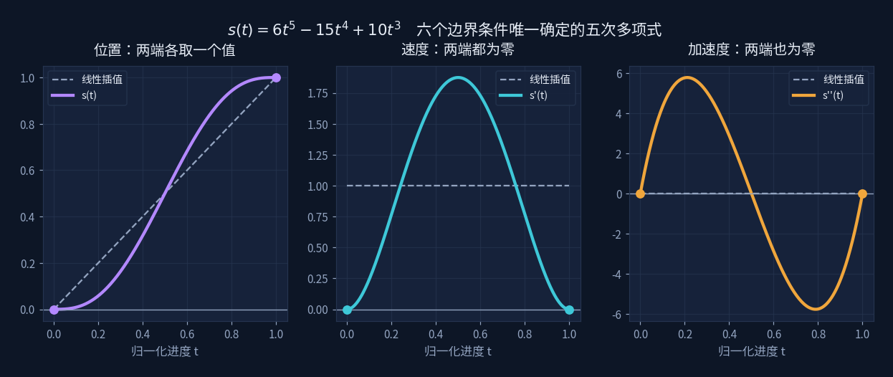
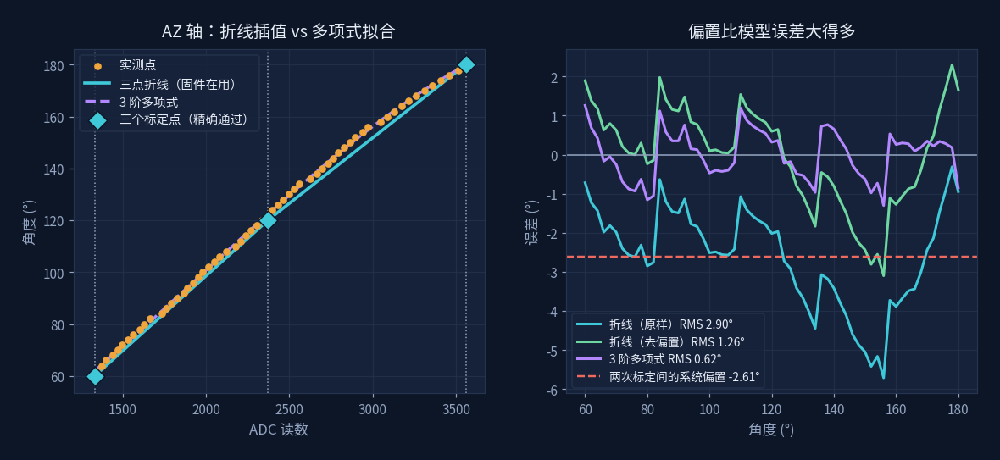

开机那一下
Servo Homing & S-Curve Motion
这不是一个跟踪太阳的实验，是两个具体问题：怎么让舵机开机不抽疯，
以及怎么让它平顺地走到位。

问题一：开机抽疯
接上电的一瞬间，云台会猛地跳一下。原因不复杂：舵机是开环的，
它不知道自己现在在哪；而程序里 attach() 一执行，
舵机库就开始输出脉宽，舵机会用全速冲向那个脉宽对应的角度。
起点是 78° 还是 170° 它一概不管，反正就是冲。
这一下对塑料齿轮、对支架、对上面挂的电池板都不友好， 而且每次开机的冲击方向还不一样，取决于上次断电时停在哪。
之前试过各种办法：把第一条指令写得离 home 近一点、开机后先延时、 分几步慢慢挪。但这些本质上都是在猜起点——猜对了平顺，猜错了照样冲。

解法：先问它在哪
舵机内部那只反馈电位器一直知道输出轴的真实角度，只是从来没人问过它。 把中心抽头引出来接到 ADC（怎么拆、怎么焊、怎么标定见上一页）， 开机流程就能改成这样——顺序是全部的关键：
// ① attach 之前先读。此时舵机没通电，输出轴是自由的，
// 电位器读到的就是它上次断电时停下的真实位置
int rawAZ = readAverage(POT_AZ, 40);
float azStart = constrain(azRawToDeg(rawAZ), AZ_MIN, AZ_MAX);
// ② attach 之后立刻写入这个实测角度
// 舵机收到的第一条指令是「待在原地」，于是它不动
svAZ.attach(PIN_AZ, US_MIN, US_MAX);
svAZ.write((int)roundf(azStart));
azCmd = azStart;
// ③ 起点已知，现在才谈得上「平滑地走过去」
smoothMoveTo(AZ_HOME, EL_HOME, 1600);这才是真正的 homing。之前所有的软化手段，本质上都是在猜起点。
—— 代码注释里的原话
值得说一句：拆舵机、焊抽头、做标定，一路折腾下来最大的回报不是知道角度是多少， 而是这三行代码的顺序。有了真实起点，"平滑"这个词才有意义。
问题二：怎么算平顺
知道了起点 78°、目标 120°，中间那 1.6 秒该怎么走？
最直觉的做法是线性插值，每 20 ms 挪同样的角度。但这样在起点和终点各有一次突变： 速度从 0 跳到某个值，走完又从那个值跳回 0。加速度在这两个瞬间是无穷大， 表现出来就是起步一顿、到位一撞。
所以要一条这样的曲线：起点终点位置对、起止速度为零、起止加速度也为零。 六个要求。
六个条件，六个系数
六个条件正好定住一个五次多项式。设 s(t) = a0 + a1t + … + a5t5，把条件写成方程：
s(0) = a₀ = 0 → a₀ = 0
s'(0) = a₁ = 0 → a₁ = 0
s''(0)= 2a₂ = 0 → a₂ = 0
终点三条（t = 1），前三个已归零，只剩 a₃ a₄ a₅：
s(1) = a₃ + a₄ + a₅ = 1
s'(1) = 3a₃ + 4a₄ + 5a₅ = 0
s''(1)= 6a₃ +12a₄ +20a₅ = 0
剩下的是一个三元一次方程组。它有没有唯一解，看系数行列式：
| 3 4 5 | = 2 ≠ 0 → 三张平面交于一点，唯一解
| 6 12 20 |
消元解出 a3 = 10、a4 = −15、a5 = 6，于是
那三个系数 6、−15、10 不是调出来的，也不是拟合出来的，
是这六个条件逼出来的唯一答案。想改平滑程度，得改条件，不能改系数。
行列式与消元的展开 → 向量与空间

三张图从左到右就是那六个条件的样子：位置在两端各取一个值，速度在两端归零，加速度在两端也归零。
中间那张的钟形是速度曲线——起步慢、中段快、收尾慢，这正是手动开阀门的感觉。
导数与二阶导数的含义 → 变化与梯度
float sCurve(float t) { return t * t * t * (t * (t * 6.f - 15.f) + 10.f); }
void smoothMoveTo(float azTgt, float elTgt, int ms) {
float a0 = azCmd, e0 = elCmd; // 起点：实测出来的，不是猜的
int steps = ms / 20;
for (int i = 0; i <= steps; i++) {
float s = sCurve((float)i / steps);
azCmd = a0 + (azTgt - a0) * s;
elCmd = e0 + (elTgt - e0) * s;
applyServos();
samplePosition(); // 顺便记录实际跟得上跟不上
delay(20);
}
}写成 t*t*t*(t*(t*6-15)+10) 是霍纳法则，两次乘法换掉五次幂运算，
在 20 ms 一次的控制循环里值得。
插值与拟合：一页里的一对
这一页出现了两次"求系数"，它们看起来像，其实是两回事。

| S 曲线 | 电位器标定 | |
|---|---|---|
| 已知 | 6 个边界条件 | 61 个实测点 |
| 未知 | 6 个系数 | 3 个系数 |
| 方程组 | 恰定 | 超定 |
| 做法 | 插值：精确满足每个条件 | 拟合：让总误差最小 |
| 结果 | 唯一解 | 最小二乘解 |
固件里的标定用的是三点折线——取 60°、120°、180° 三个点，分两段线性插值。 这也是插值：它精确通过那三个点（左图的菱形），代价是两点之间靠直线糊弄。 当初选它是因为两点外推时中段能差 4°，加一个中间点分两段就压下去了。
拿 sweep 的 61 点数据回头验它，右图是结果：
| 方法 | AZ 轴 RMS | 说明 |
|---|---|---|
| 三点折线（原样） | 2.90° | 含 −2.61° 系统偏置 |
| 三点折线（去掉偏置） | 1.26° | 形状本身的误差 |
| 3 阶多项式拟合 | 0.62° | 形状误差减半 |
换成多项式确实能把形状误差减半。但右图里真正扎眼的是那条红色虚线： 两次标定之间整体偏了 2.61°，比任何模型误差都大。 三点标定做于 2026-08-24，sweep 扫描是另一次采集，中间机械动过、电源换过—— 一次拆装就够抹掉换模型带来的全部收益。
上一页的结论是机械回差 2.07° 压过拟合残差 0.62°。
这一页又添一条：标定漂移 2.61° 同样压过它。
限制精度的从来不是数学，是物理。
所以折线换多项式这件事，优先级排在重新标定和消除回差后面。
知道该先修哪一个，比知道怎么修更值钱。
最小二乘的展开 → 拟合与最小二乘
系统构成
整套东西是一台双轴云台：两只 MG90S 舵机，四个光敏电阻做四象限差分， 一块 SSD1306 显示状态，跑在 ACEBOTT ESP32 Max V1.0 上。
| 用途 | 引脚 | 备注 |
|---|---|---|
| AZ / EL 舵机信号 | GPIO 5 / 16 | 脉宽 500–2400 µs |
| AZ / EL 电位器抽头 | GPIO 32 / 33 | ADC1 |
| 光敏 LU / RU / LD / RD | GPIO 36 / 39 / 34 / 35 | 只能输入，正好用来接传感器 |
| OLED | GPIO 21 / 22 | I²C |
引脚是被逼出来的分配。早期只有四个光敏时，它们占着 32/33/34/35 很舒服； 加上电位器反馈后要多两路 ADC，而 ADC2 开 WiFi 就废，能用的 ADC1 只有 32–39 这八个脚。 于是把 32/33 让给电位器（这两个脚可输入可输出，灵活）， 光敏挪到 36/39——那两个是只能输入的脚，除了接传感器也干不了别的，正好物尽其用。
屏幕上那三个数是最常看的：
AZ 120.0>118.3 -1.7
指令 实测 差值 ← 舵机的稳态误差（死区 + 齿轮旷量）有了实测这一列，才第一次能看见指令和现实的差距。 在这之前，云台转到哪儿全靠肉眼估。
素材
请输入友情码
Enter the friendship code
线索：首页那句话是谁说的？填他的姓，拼音或英文都行。
Hint: who said the line on the homepage? His surname will do.
不对，再想想 Not quite — try again